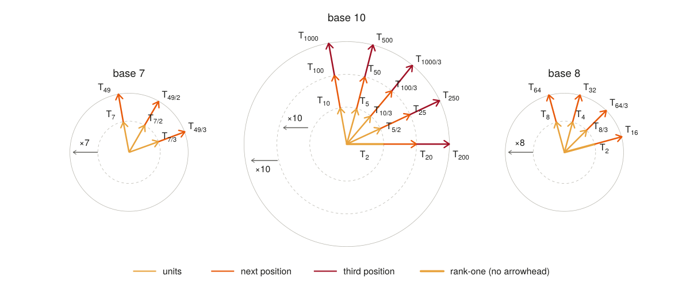

The base organizes the features.
Matched language models trained in bases 6, 7, 8, and 10 learn harmonic families tied to the numeral base. Base 7 helps distinguish this account from a purely CRT-based explanation.
Research manuscript · Under review
Changing how numbers are written changes the Fourier features language models learn. We test how these features contribute to arithmetic predictions, and identify small MLP populations that write them.
01 / Findings
Matched language models trained in bases 6, 7, 8, and 10 learn harmonic families tied to the numeral base. Base 7 helps distinguish this account from a purely CRT-based explanation.
Interchanging feature phases tests their contributions to digit predictions. Contributions approximately add near the output in the tested base-7, base-8, and Qwen models, while earlier Qwen layers show nonlinear interactions.
Replacing a selected 0.73% of MLP neurons across Qwen layers 21–31 recovers 92.4% of the full-MLP units-digit margin gain. A separate population intervention transfers carry-dependent tens predictions.
02 / Representation geometry

03 / Interpretation
Each Fourier feature contributes a periodic pattern of scores over candidate digits. For a decimal answer ending in 7, a period-5 feature can favor 2 and 7 while parity favors odd digits. Their shared peak is 7. This places CRT-style composition within a broader harmonic account.
In Qwen, selected MLP activation replacements also transfer carry-dependent tens predictions across 360 tested carry/no-carry pairs. These experiments connect feature geometry to causal control of model behavior.
Scope. The study identifies causal features and contributing MLP populations, not a complete operand-to-answer circuit. The matched radix models use one training seed per base and explicit arithmetic data. The carry experiments do not establish that one residual clock directly drives another.
04 / Reference
Alper Yıldırım, Patrick Lutz, and Atticus Geiger.
The Numeral Base Sets the Fourier Features Language Models Compute With.
2026. Under review. PDF.
Supported by the Practical AI Alignment and Interpretability Research Group (PRAIR).